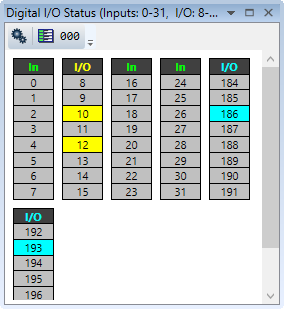
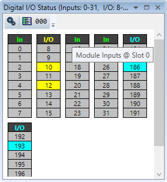
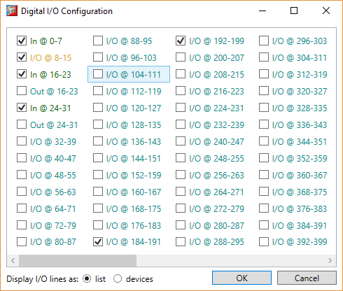
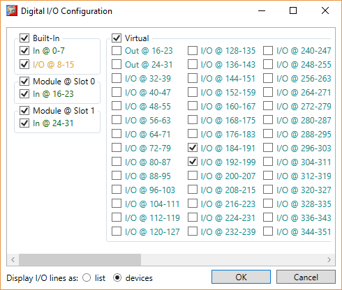
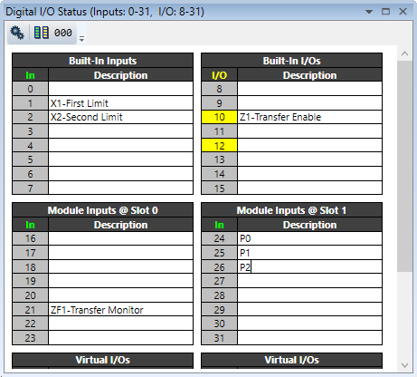
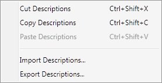

The digital I/O viewer is used to show the states of the digital inputs and outputs of the controller (both local and remote).

The display divides the I/O address space up into blocks of 8 lines. Usually all the lines in a block are the same type. The types available and their associated colours are shown in the table below:
|
Type |
Colour |
|
Input |
Green |
|
Output |
Orange |
|
Input/Output |
Yellow |
|
Virtual Input/Output |
Cyan |
Information about the physical device containing an I/O block is displayed as a tool-tip if the mouse cursor hovers over the black header block of an I/O group.

It is possible to change which banks are displayed by clicking on the "Configuration" button which then displays the configuration dialog.

It is possible to group the daiplay by physical device by selecting the “devices” radio button.

Using this dialog the user can select which banks of I/O lines to display.
Each i/0 line can be given a description. The description
can be shown or hidden by clicking on the "Show/Hide Descriptions"
button
 or
or
 . Device information is
displayed in the header for each I/O block.
. Device information is
displayed in the header for each I/O block.

Right clicking on a description will bring up a context menu allowing to user to perform cut and paste operations.

Right clicking on the header of an IO block will bring up a context menu allowing bulk copying, pasting, importing and exporting of descriptions.

If an output state has been changed (forced on) by the Digital IO Tool it may not be possible for a program running on the controller to turn it off. Clicking the button will free any forced outputs so that a running program can control them.